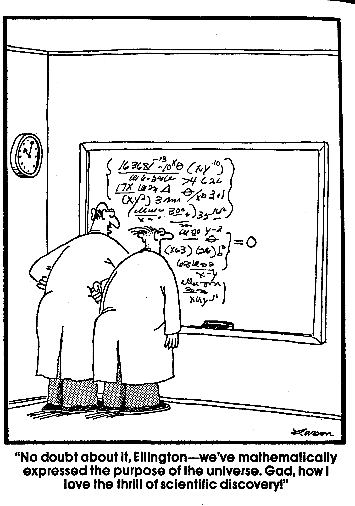

Chemometric analysis of
acid-base measurements
A multivariate approach
ISBN:
90-9013351-8 ©
M. Hekking, 1999 Chemometric
Analysis of Acid-Base Measurements. A Multivariate Approach. Thesis
Erasmus University Rotterdam. No
part of this book may be reproduced without permission of the
author.
Acknowledgement The work presented in this thesis
was partly supported by a grant for scientific research from the
‘Onze Lieve Vrouwe Gasthuis’ (Amsterdam, The Netherlands)
and the ‘St. Elisabeth Ziekenhuis’ (Tilburg, The Netherlands).
Financial support by IMRO
TRAMARKO bv for the publication of this thesis is gratefully
acknowledged.
Chemometric analysis of
acid-base measurements
A multivariate approach
chemometrische analyse van
zuur-base metingen
Een multivariate benadering
PROEFSCHRIFT
ter verkrijging van de graad
van doctor aan de
De openbare verdediging zal
plaatsvinden op
woensdag 22 december 1999 om
15:45 uur
Marcel Hekking
geboren te ’s-Gravenhage
Erasmus Universiteit Rotterdam op gezag van
de Rector Magnificus Prof.dr. P.W.C. Akkermans M.A.
en
volgens besluit van het College voor Promoties.
door
Promotiecommissie Promotor Prof.dr.
E.S. Gelsema Overige
leden: Prof.dr. H.A. Bruining Prof.dr.ir.
H.L. Vader Prof.dr.ir.
A. Hasman Co-promotor Dr.
J. Lindemans
THE
FAR SIDE by Gary Larson 
THE
FAR SIDE © FARWORKS, INC. Used by permission of UNIVERSAL PRESS
SYNDICATE. All rights reserved.